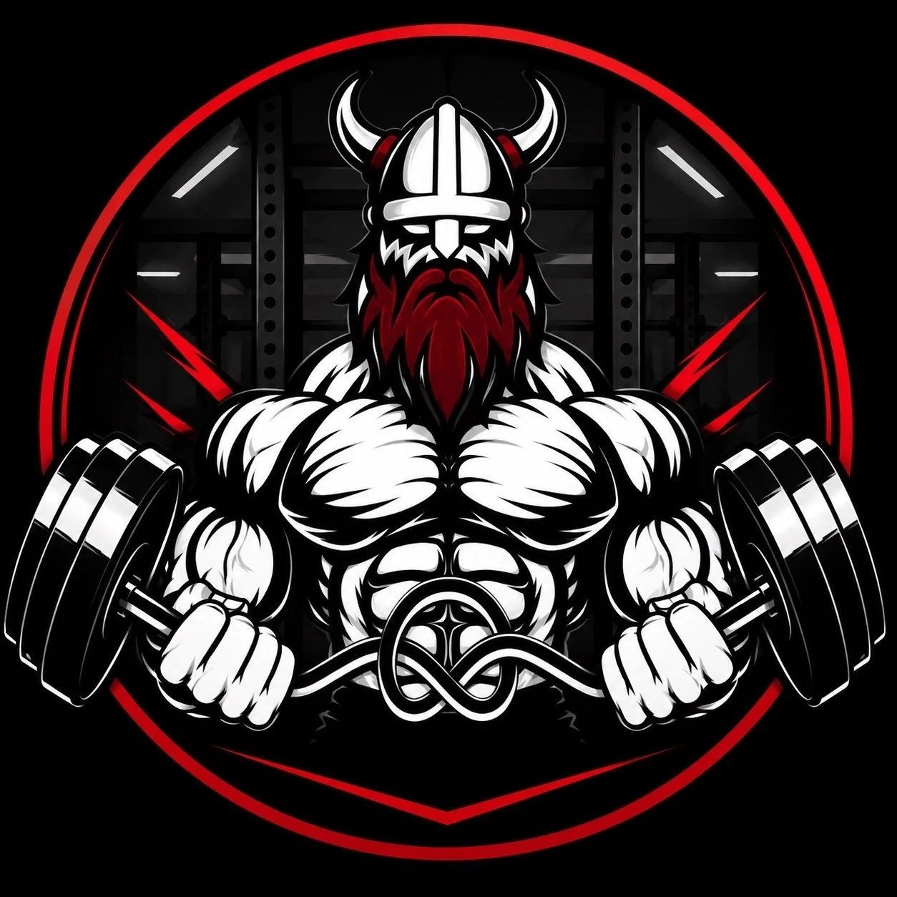
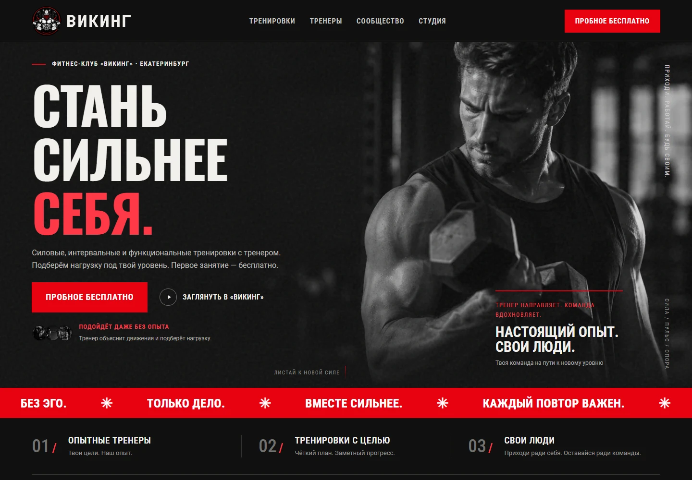
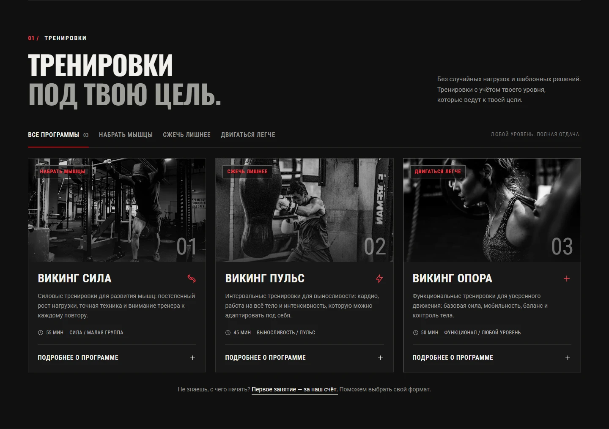
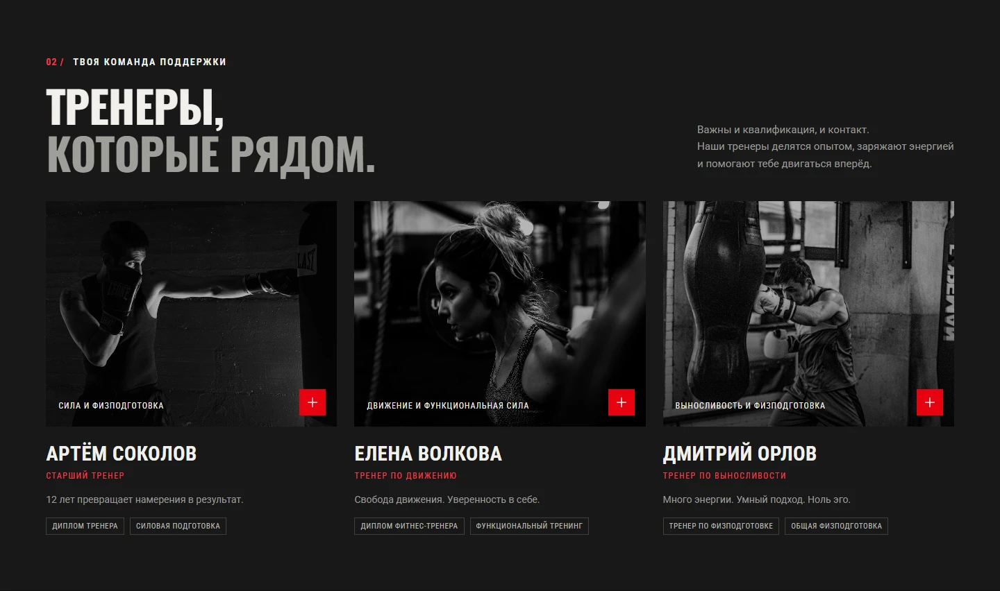
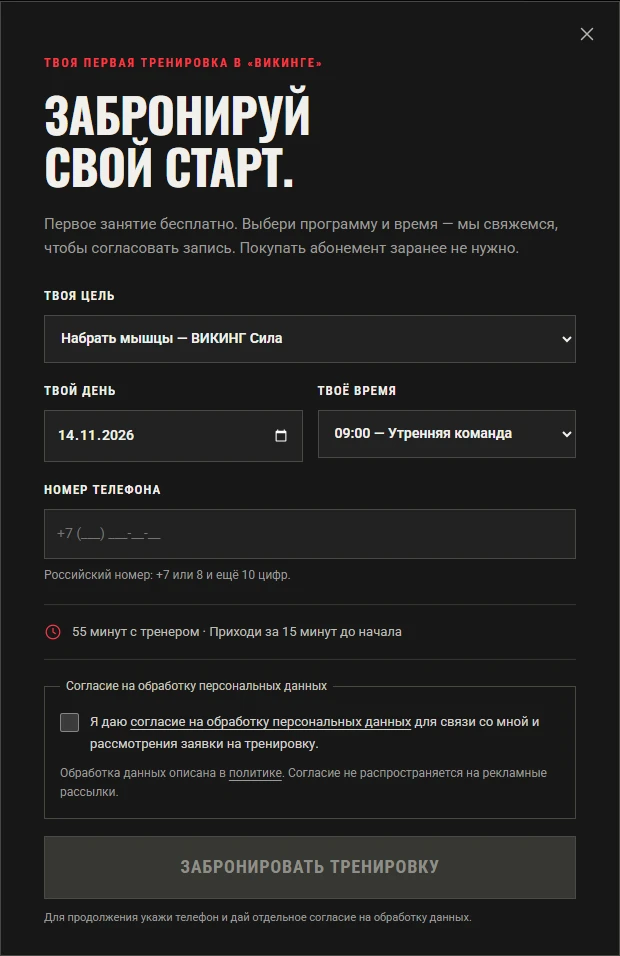
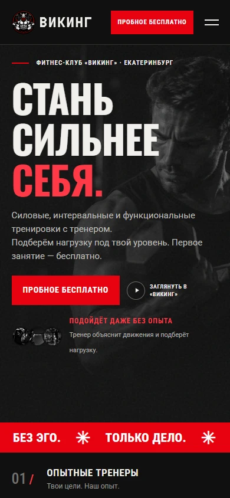
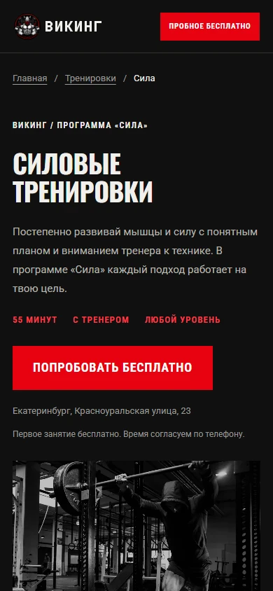
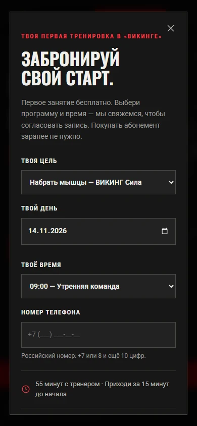

ВИКИНГ
Первая тренировка
начинается с уверенности.
Дизайн и разработка сайта фитнес-клуба
UX/UI · АДАПТИВНАЯ ВЁРСТКА
ПРОБЛЕМА И ЗАДАЧА
Помочь решиться
на первый шаг.
«Какая тренировка мне подойдёт? Справлюсь ли я? Что будет на первом занятии?»
Новичку нужно разобраться в форматах и почувствовать себя уверенно ещё до визита в клуб. Одной фотографии зала для этого недостаточно.
Сайт «ВИКИНГА» связывает выбор программы с личной целью, знакомит с тренерами и объясняет первый визит. Задача интерфейса — провести человека от интереса к понятному плану действий.
- КЛИЕНТ
- Фитнес-клуб «ВИКИНГ»
- ГОРОД
- Екатеринбург
- РАБОТЫ
- UX/UI, адаптивная вёрстка, страницы программ
ПЕРВОЕ ЗНАКОМСТВО
Сильный характер.
Понятное предложение.
На первом экране — характер клуба, форматы тренировок и предложение бесплатного пробного занятия. Подпись о поддержке тренера отвечает на главный вопрос новичка.

ВЫБОР ПРОГРАММЫ
Начинаем
с твоей цели.
«Сила», «Пульс» и «Опора» объясняются через задачи человека. Фильтр сокращает выбор, карточки показывают длительность и формат, а отдельная страница раскрывает содержание программы.

СИЛА
Работа с весами и постепенный рост нагрузки.
ПУЛЬС
Интервальные занятия и развитие выносливости.
ОПОРА
Мобильность, баланс и уверенное движение.
ПОДГОТОВКА К ВИЗИТУ
Знакомые лица.
Меньше неизвестности.
Тренеры, пространство клуба и ответы на частые вопросы помогают представить первое занятие. Отдельный блок объясняет, что взять с собой, когда прийти и как тренер подберёт нагрузку.

СЦЕНАРИЙ ЗАПИСИ
Следующий шаг —
перед глазами.
Из страницы программы человек попадает в форму с уже выбранной целью. Остаётся указать удобный день, время и телефон.
Подсказки объясняют длительность занятия и подготовку к визиту. Проверка номера и отдельное согласие на обработку данных помогают пройти форму последовательно.
Выбрать цель
Программа под личную задачу.
Определить время
День и удобный вариант занятия.
Подготовиться к визиту
Понятный план первого посещения.
В представленной версии реализован интерфейс записи. Серверная отправка заявок в исходном репозитории не подключена.

МОБИЛЬНЫЙ ОПЫТ
Весь путь —
в твоих руках.
На телефоне сохраняются характер сайта, выбор по цели и доступ к пробному занятию. Навигация сворачивается в меню, программы идут в одну колонку, форма подстраивается под узкий экран.



ВИЗУАЛЬНЫЙ ЯЗЫК
Контраст.
Ритм. Энергия.
Тёмная основа и спортивная фотография создают атмосферу клуба. Красный выделяет действия, а узкая типографика сохраняет энергичный характер и на большом экране, и на телефоне.
СИЛЬНЕЕ
СЕБЯ.
Roboto — основной текст и подсказки
РЕШЕНИЕ
От «не знаю, с чего начать»
к понятному первому шагу.
Сайт собирает вопросы новичка в последовательный путь — выбрать формат, познакомиться с клубом и подготовиться к первой тренировке.
- Программы связаны с понятными целями.
- Условия первого визита доступны до обращения.
- Сценарий записи одинаково понятен на ПК и телефоне.
ВИКИНГ × INTERDIZ